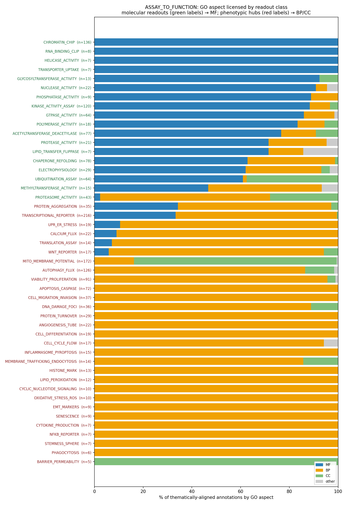

Readout → annotation rubric (ASSAY_TO_FUNCTION)
A curator-facing rubric for deciding what GO annotation a convergent
phenotypic readout licenses. Grounded in the publications-corpus mining (see
../ASSAY_TO_FUNCTION.md); machine-readable form in
rubric.yaml.
The core rule
A readout that reports the state of a process P (ROS level, caspase
activity, UPR activation, ΔΨm, Ca²⁺, pH, viability…) measures a downstream
consequence, not the gene product's molecular activity. So a positive readout
after perturbing gene G licenses at most:
- aspect BP (or CC for organelle-health probes) — never MF;
- framing "response to P" / "regulation of P" — not a direct effector role;
- default non-core.
Promote to core only when independent evidence (genetics, biochemistry,
structure) places G in the recognized machinery / sensor set for P — not
merely as a perturbation that moves the needle.
This is what curators are already doing in the corpus: the same readout yields
ACCEPT for the machinery and KEEP_AS_NON_CORE / MARK_AS_OVER_ANNOTATED
for genes acting indirectly.
Decision procedure
Is the evidence a state/phenotype readout (not a molecular assay of G)?
│
├─ No → ordinary evidence rules apply (MF/direct annotation may be fine).
│
└─ Yes → 1. Reject any MF term sourced from this readout.
(Exception: a transcriptional reporter for a bona fide
DNA-binding TF — MF TF-activity is legitimate.)
2. Use a "response to P" / "regulation of P" BP term at the
altitude the readout DIRECTLY reports — not a more distal or
tissue-specific child.
3. Is G in the recognized core machinery / sensor set for P?
├─ Yes → core annotation OK (ACCEPT).
└─ No → KEEP_AS_NON_CORE (or MARK_AS_OVER_ANNOTATED if the
gene's real function clearly lies elsewhere).
Consolidated catalog (all 60 classes)
The catalog now spans 60 readout classes across six mining batches. The full
machine-readable summary (per-class proximity/convergence, aligned-annotation
GO-aspect counts, %MF, licensing) is auto-generated:
reports/catalog_summary.tsv— one row per classreports/catalog_table.md— the same as a Markdown quick-reference (molecular vs
phenotypic), regenerated from the catalog + mined matchesreports/proximity_axis.png— the summary figure
uv run --with matplotlib python projects/ASSAY_TO_FUNCTION/consolidate.py
The headline, in one line: across thematically-aligned annotations, the GO
aspect a readout licenses is set by proximity —
molecular readouts → 77% MF (567/738); phenotypic hubs → 8% MF (90/1087).
…and that 8% is almost entirely the legitimate TRANSCRIPTIONAL_REPORTER →
DNA-binding-TF-activity exception (MF 72 of the 90); excluding it, phenotypic MF
≈ 2%. The one molecular outlier is PROTEASOME_ACTIVITY (2% MF) — its aligned
terms are the catabolic-process / complex, i.e. it reads as proteostasis
machinery rather than a bare endopeptidase MF.

The curated quick-reference below keeps the headline over-annotation hubs with
their machinery discriminators; see catalog_table.md for the exhaustive list.
Quick reference
| Readout class | Licenses | Never | Default | Core only if G is… |
|---|---|---|---|---|
| Apoptosis / caspase | BP | MF | non-core | BCL2 family, caspase, IAP, APAF1, BH3-only |
| Viability / proliferation | BP | MF | non-core | core cell-cycle/division machinery |
| Oxidative stress / ROS | BP | MF | non-core | antioxidant enzyme / redox sensor (SOD, catalase, PRDX, KEAP1-NRF2) |
| Autophagy flux | BP, CC | MF | context | ATG/ULK/BECN1/ATG8 machinery |
| Mito membrane potential | CC, BP | MF | non-core | respiratory chain / import / bioenergetic component |
| UPR / ER stress | BP | MF | non-core | UPR transducer (IRE1/PERK/ATF6/XBP1) or BiP |
| Calcium flux | BP | MF* | non-core | Ca²⁺ channel/pump/sensor (EF-hand) |
| Iron probe | BP | MF | non-core | Fe transporter / Fe-S biogenesis / storage |
| pH probe | BP | MF | non-core | proton pump/transporter |
| Transcriptional reporter | BP, MF | — | context | sequence-specific TF / coregulator |
| Cell migration / invasion | BP | MF | non-core | actin/adhesion-turnover machinery, or a ligand/guidance cue whose signature is motility |
| Cell adhesion / spreading | BP | MF | non-core | integrin/adhesion-receptor or matrix (ECM) component |
| Membrane trafficking / endocytosis | BP, CC | MF | context | clathrin/adaptor/Rab/ESCRT machinery or the internalized receptor |
| Secretion / degranulation | BP | MF | non-core | SNARE/exocytic machinery or the regulated cargo's dedicated secretagogue |
| Metabolic flux (glucose/Seahorse) | BP | MF | non-core | glycolytic/OXPHOS enzyme or glucose transporter |
| DNA-damage foci (γH2AX/comet) | BP, CC | MF | context | DDR/repair machinery (ATM/ATR, BRCA, RAD51, 53BP1, MRN) |
| Senescence (SA-β-gal) | BP | MF | non-core | core senescence effector (p53/p21, p16-RB) |
| Wnt reporter (TOPFlash) | BP | MF | context | Wnt pathway component (ligand/receptor/destruction complex/TCF) |
| NF-κB reporter | BP | MF | context | NF-κB pathway component (RelA/IκB/IKK/TRAF) |
| Hypoxia reporter (HRE/HIF) | BP | MF | non-core | HIF subunit/PHD/VHL oxygen-sensing machinery |
| Notch reporter (RBP-J/CSL) | BP | MF | context | Notch receptor/ligand/CSL transcription complex |
| Hippo reporter (TEAD/GTIIC) | BP | MF | context | Hippo kinase cassette or YAP/TAZ/TEAD |
* Ca²⁺-binding MF (EF-hand) can be justified by independent structural/binding
evidence, not by the imaging readout itself.
The pathway-reporter rows (Wnt/NF-κB/Notch/Hippo/hypoxia) are context rather
than non-core because, like a transcriptional reporter, the same readout
legitimately reports the core output of a bona fide pathway component (a
Frizzled receptor, RelA, a HIF subunit) — promote to core only for those, demote
for genes that merely perturb the reporter.
The molecular contrast: rubidium (⁸⁶Rb⁺) flux
Not every ion readout is a convergent hub. Rb⁺ flux (⁸⁶Rb⁺ efflux/uptake, the
classic K⁺-channel/transporter assay using Rb⁺ as a K⁺ congener) sits at the
molecular / low-convergence end of the proximity axis: it is a near-direct
measure of the gene product's own transport activity, so — unlike Ca²⁺ imaging (a
second-messenger hub that licenses at most a BP term) — it legitimately licenses
an MF channel-activity term (potassium channel activity, GO:0005267). It is
the positive-control mirror image of the phenotypic hubs.
Caveat (the same proximity logic in reverse): Rb⁺ flux is direct only for the
pore-forming channel. If flux moves because an upstream regulator, β-subunit,
or trafficking factor was perturbed, the inference is exactly as indirect as the
hubs — BP-only, default non-core.
Corpus note: ⁸⁶Rb is detected in 33 cached papers but is almost never the cited
original_reference_id of a reviewed annotation (only 1, and it is not a K⁺
channel), so the corpus is currently under-powered to demonstrate the MF licensing
empirically. This re-illustrates the first-pass finding that MF annotations cite
structural/biochemical references, not functional-flux assays.
Molecular MF-licensing controls (the positive-control set)
Where Rb⁺ flux was too niche, common molecular assays demonstrate the MF side of
the proximity axis directly. Aligned-annotation aspect (canonical join):
ChIP/EMSA → MF 136, in-vitro kinase assay → MF 106, GTPase/GAP/GEF →
MF 55, in-vitro ubiquitination/E3 → MF 39 (+CC 24 for the ligase complexes),
electrophysiology → MF 18. These are the molecular mirror of the hubs: a
readout of the gene product's own activity (DNA binding, phosphotransfer, GTP
hydrolysis, ubiquitin transfer, ion conduction) legitimately licenses an MF term.
Pairings to keep in mind when curating:
- ChIP/EMSA (MF, direct DNA binding) ↔ transcriptional reporter (BP, pathway output)
- electrophysiology (MF, channel activity) ↔ Ca²⁺/Rb⁺ imaging-flux (BP, ion state)
- in-vitro kinase assay (MF) ↔ phospho-Western of a downstream substrate (BP, pathway state)
Same caveat as Rb⁺ flux: these are direct for the assayed protein; if the readout
moves because an upstream regulator was perturbed, the inference is indirect.
Worked contrasts from the corpus
Each pair shows the same readout licensing a core annotation for the
machinery vs. an over-annotation for a gene acting indirectly:
- Apoptosis:
BCL2→ negative regulation of apoptotic process (ACCEPT)
vsAkt1→ negative regulation of intrinsic apoptotic signaling (NON_CORE). - Proliferation:
CDK1→ G2/M transition of mitotic cell cycle (ACCEPT)
vsACTB→ positive regulation of cell population proliferation (OVER_ANNOTATED). - ROS:
TP53→ positive regulation of ROS metabolic process (ACCEPT)
vsPEX10/PEX13(peroxins) → cellular response to ROS (OVER_ANNOTATED). - UPR:
ATF4→ PERK-mediated UPR (ACCEPT) vsHSPA1A→ ER UPR
(NON_CORE); andIRE1→ unfolded protein binding (MF, OVER_ANNOTATED) —
a textbook reporter-driven MF over-call. - Autophagy:
AMBRA1→ autophagosome assembly (ACCEPT) vsABI2→
mitophagy (OVER_ANNOTATED). - Transcription (the MF exception):
ATF2/ASCL1→ DNA-binding
transcription factor activity (ACCEPT — genuine TFs) vsAIP→
transcription coactivator activity (OVER_ANNOTATED).
Extended set (second-pass readout classes):
- Cell migration / invasion:
CLTC-style adhesion/cytoskeletal machinery and
guidance ligands whose signature is motility stay core —CCL11/eotaxin →
cell chemotaxis andPDGFA/PDGFB→ cell migration / chemotaxis are
ACCEPT (these are already incore_functions: a chemokine's defining output is
chemotaxis). ContrastSTAT3→ positive regulation of cell migration (a
transcription factor; migration is a downstream transcriptional consequence,
not in the motility machinery) — the genuine non-core/borderline case. - DNA-damage foci:
BRCA1/BRCA2/CHD1/RAD18→ double-strand break
repair / DNA repair complex (ACCEPT — DDR machinery) vs a gene that merely
shows γH2AX foci after perturbation (non-core "response to DNA damage"). - Endocytosis:
CLTC(clathrin) /TFRC(transferrin receptor) →
clathrin-dependent endocytosis / receptor-mediated endocytosis (ACCEPT —
the machinery and the internalized receptor) vs a cargo that is merely taken
up (non-core). - Wnt reporter:
CTNNB1/AXIN1/FZD7→ canonical Wnt signaling pathway
(ACCEPT — pathway machinery) vs a gene that only shifts TOPFlash (non-core). - Senescence / NF-κB / hypoxia:
TP53→ cellular senescence,TRAF6→
NF-κB signal transduction,ARNT/HIF-1β → response to hypoxia are ACCEPT
because the gene is the pathway's core effector/transducer — the reporter
reports its own output.
Caveat: dedicated signaling ligands (signature vs incidental)
The "phenotypic hub readout ⇒ non-core" rule, and the flagger's
indirect_ligand discriminator, over-fire on dedicated cytokines and growth
factors. For a gene whose entire biological purpose is to regulate a process
(VEGFA→endothelial proliferation; IL21→B-cell/Tfh responses), the regulated
process is core even though it is mechanistically downstream of receptor
signaling. "Cytokine activity" alone is nearly contentless, so the regulated
processes are the informative, identity-defining annotations.
The discriminating axis is therefore signature vs incidental, not
ligand-vs-not:
- Signature — the process the gene is known/named for, and that loss-of-
function abolishes → keep core (VEGFA endothelial proliferation; IL21 germinal
center / Tfh / B-cell responses). - Incidental / generic / tissue-specific-secondary / context-dependent →
demote (HMGB1→CXCR4 calcium; VEGFA→generic anti-apoptosis; IL21→T-cell
proliferation is borderline and was deferred to expert review, issue #1418).
Mechanistic directness still matters for the ligand vs receptor distinction
(knockout necessity ≠ the ligand directly performing the process), but it
must not be applied so bluntly that a dedicated cytokine's signature outputs are
stripped to non-core.
How this was derived
Across 722 thematically-aligned (annotation, source-paper-readout) pairs, the
GO aspect of hub-readout annotations is overwhelmingly BP/CC with ~zero MF
(transcriptional reporters excepted, and there the MF is legitimate). The
distinguishing action is non-core demotion, not removal — see the action
and aspect tables in ../ASSAY_TO_FUNCTION.md. The
"core only if in the machinery" discriminator is read directly off the
ACCEPT-vs-downgrade contrasts above.
Extension validates the constraint. Adding 12 new readout classes (migration/
invasion, adhesion, endocytosis, secretion, metabolic flux, DNA-damage foci,
senescence, and pathway reporters for Wnt/NF-κB/Notch/Hippo/hypoxia) reproduced
the same pattern: every new aligned class is BP/CC-dominant with ~zero MF (the
sole MF, LRRK2 β-catenin destruction complex binding, is a binding MF already
non-core), and each shows elevated non-core demotion (migration 16/35,
membrane-trafficking 7/14, Wnt 8/17). Re-review of the standing-ACCEPT
candidates again found the flagger's precision-on-accepted-calls low: they are
either the machinery (BRCA1/2, CLTC, TFRC, CTNNB1, TRAF6, ARNT, TP53 —
correctly core) or a signature output of a dedicated ligand (CCL11/PDGF
chemotaxis — correctly core, already in core_functions). The machinery and
signature-vs-incidental discriminators are doing the real work.